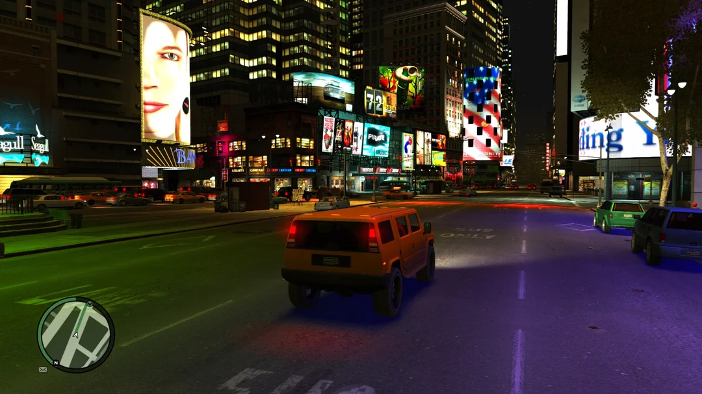
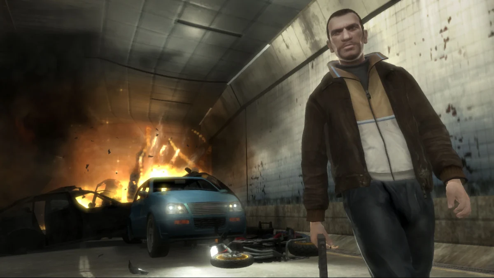
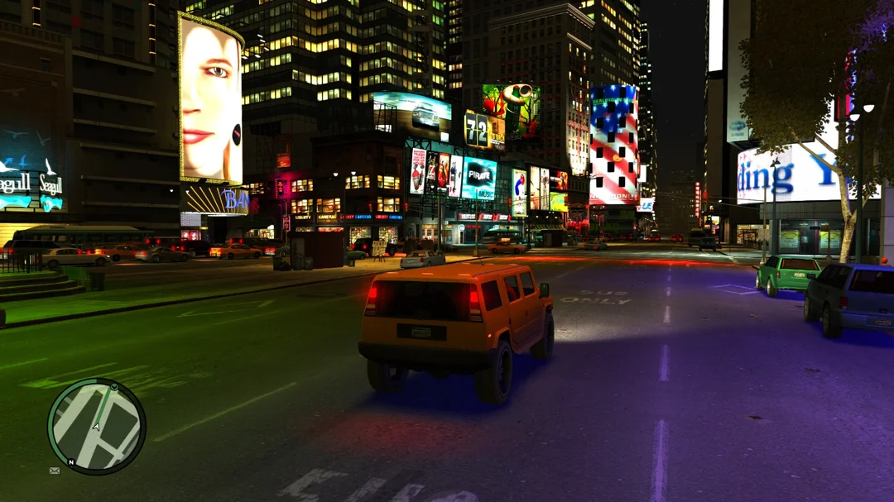
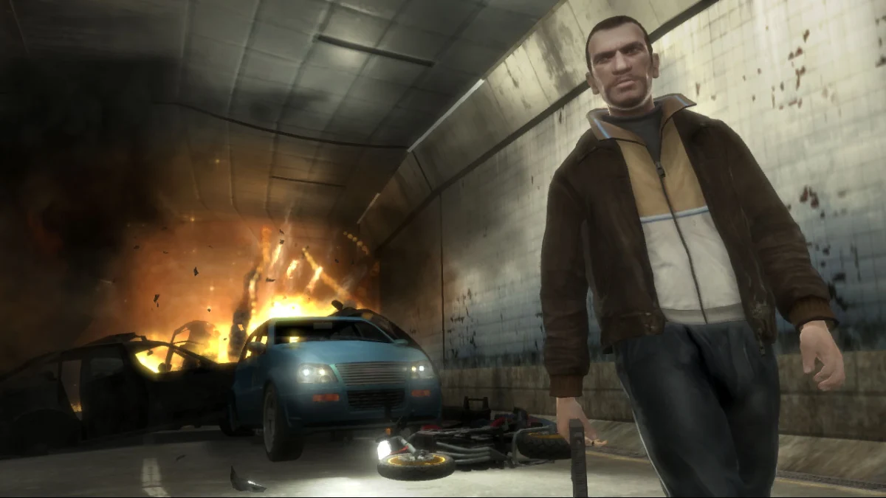

Rockstar Games'in efsanevi açık dünya serisinin bir parçası olan GTA IV, oyuncuları Liberty City'nin karanlık sokaklarına götürüyor. Niko Bellic, Doğu Avrupa'dan Amerika'ya gelerek, geçmişinin peşinden gitmek ve kendi Amerikan Rüyasını inşa etmek için şehre adım atıyor. Ancak, kısa zamanda kendisini suç dolu, yozlaşmış ve tehlikeli bir dünyada buluyor. Bu oyun, serinin önceki yapımlarından çok daha derin bir hikaye ve karakter geliştirme sunuyor.
Hikaye ve Karakterler
GTA IV'ün en güçlü yönlerinden biri, Niko Bellic’in karakterinin derinliği. Hem duygusal olarak zor bir geçmişi olan, hem de adalet ve intikam arayışıyla hareket eden bir karakter olarak, Niko'nun yolculuğu oldukça etkileyici. Oyun, özgürlük ve suç temalarını işlerken, aynı zamanda modern Amerikan toplumunun karanlık yönlerini de eleştiriyor. Diğer karakterler de son derece detaylı, her biri farklı kişilikler ve hikayelerle şehri daha canlı kılıyor.
Oynanış ve Mekanikler
GTA IV, açık dünya oyunlarının geleceğini şekillendiren bir yapım. Liberty City, sadece bir şehir değil, oyuncunun her adımında keşfedilecek bir dünya. Araçlarla sürüş, dövüş, görevler ve diyaloglar arasındaki denge son derece iyi sağlanmış. Araba sürerken gerçekçi bir fizik motoru, çatışmalar sırasında daha taktiksel bir yaklaşım gerektiriyor. Silahlar, yakın dövüşler ve arabalarla yapılan kovalamacalar, her anı heyecan dolu kılıyor.
Grafikler ve Atmosfer
Liberty City'nin tasarımı, zamanının en dikkat çekici görsellerini sunuyor. Yağmurun altında, gece sokaklarda gezerken, şehri aydınlatan neon ışıkları ve gölgeler oyuncuyu gerçek bir dünyadaymış gibi hissettiriyor. Oyun, ayrıntılara oldukça özen göstermiş, her köşe başı ayrı bir hikaye anlatıyor. Ayrıca, hava durumu değişimleri ve şehirdeki insanların günlük yaşamı da atmosferi oldukça canlı kılıyor.
Müzik ve Ses Tasarımı
GTA IV’ün müzikleri, şehri gerçekten yaşatıyor. Radyo istasyonları, dönemin hit parçalarıyla dolu ve oyun içinde geçen zamanla uyumlu bir şekilde çalıyor. Oyunun ses tasarımı da oldukça başarılı; araç seslerinden, şehir gürültüsüne kadar her şey gerçekçi bir şekilde yerleştirilmiş.
Çok Oyunculu Mod ve Yan Görevler
GTA IV’ün çok oyunculu modları, hem kooperatif hem de rekabetçi modlar sunuyor. Şehirde arkadaşlarınızla birlikte suç işlemek, yarışlar yapmak ya da sadece kaos yaratmak mümkün. Yan görevler ve gizli öğeler, oyuncuları keşfe çıkararak, ana hikayenin ötesine geçmeye teşvik ediyor. Ayrıca, oyun içindeki sosyal etkileşimler, Niko'nun arkadaşlarıyla takılmak ya da akşam yemeği yemek gibi günlük yaşam aktiviteleri, dünyaya daha fazla derinlik katıyor.